Chess history, one short board at a time.
A chess roguelike of eight small boards, played with real historical pieces that wear their moves on their faces.
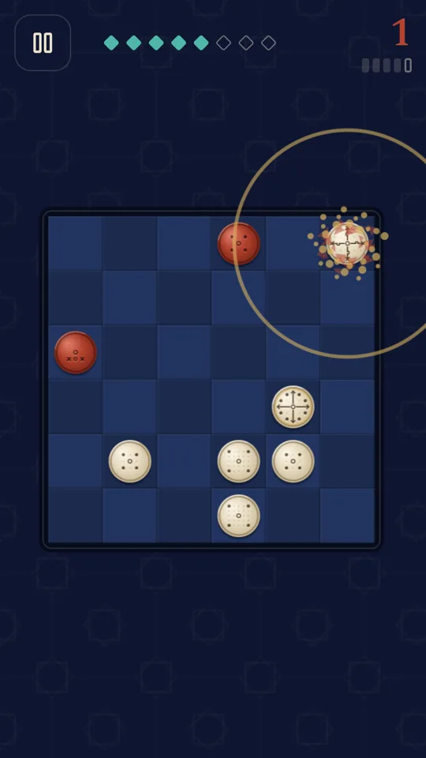
Every piece wears its move
Each piece is a turned disc with its move cut into the face like a seal. Drilled dots are squares it leaps to, grooves running to the rim are lines it slides along, and crosses mark captures only. You can read any piece at a glance, without a rulebook.
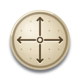
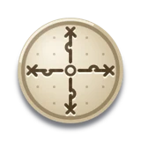
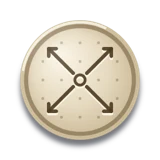
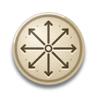
The moves follow H. J. R. Murray's A History of Chess (1913) and the standard rules of xiangqi, shogi and makruk. In the game's museum each piece has its own page with a pin on an engraved map of the Old World.
How to play
A run is eight boards. Each board is a small position, 5 by 5 or 6 by 6, with your army on the bottom two rows and the rival's guards and king at the top. You move one piece, the rival answers with one move, and so on. Win the board by capturing the rival king before your moves run out. There is no check and you have no king of your own: your army is everything you have.
Moving
Tap one of your pieces, then tap a square, or drag the piece there. Touching a piece lights its moves: turquoise dots for squares it can move to, turquoise corners on pieces it can capture, and a small carnelian notch on any square where the rival could take it on the next move. Touch a rival piece to see its moves in carnelian, so you can read every threat before you commit. An illegal tap simply shakes the piece.
The move limit and par
The big number at the top right is how many moves you have left. The ticks under it show the board's par: the shortest win that exists against this rival. Early boards give you two or three moves of slack beyond par; from board five on you get one. Run out of moves and the board is lost, and a lost board ends the run.
Lost pieces stay lost
Any piece the rival captures is gone for the rest of the run, and the next board is built for the army you still have. A baidaq that reaches the far row promotes, to a ferz in shatranj and to the queen in the mad queen era, and the rival's pawns promote too.
Draft, promote or fuse
After each won board you choose one of three: a new historical piece, a historical promotion of a piece you have, or a Fuse that joins two of your pieces into one that moves as both. Your army holds at most six pieces; once it is full, the draft offers only promotions and fuses.
Eras, unlocks and mastery
You start in shatranj, the chess of Baghdad around 850. Complete a run, or win sixteen shatranj boards, to open the mad queen era of Valencia around 1475, with the bishop and the queen. Milestones add pieces to later runs: the camel, the khon and the cannon in shatranj, the lance and the gold general in the mad queen era. Each era has three mastery stars: complete a run, play every board at par, and finish a run without losing a piece.
Fuse pieces that history named
Two different pieces of your army can fuse into one that moves as both. Where a real chess variant gave that compound a name, the game uses it, and the disc carries both diagrams inside a thin gilt ring.
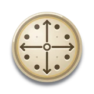
Champion
Rukh and faras. Pietro Carrera's book of 1617 proposed it for a larger chessboard.
Centaur
Bishop and faras, Carrera's second new piece of 1617.
Amazon
Queen and faras. In 18th century Russia the queen could also move as a knight.
Mann
Ferz and wazir: the man of courier chess, played in Germany from about 1200.
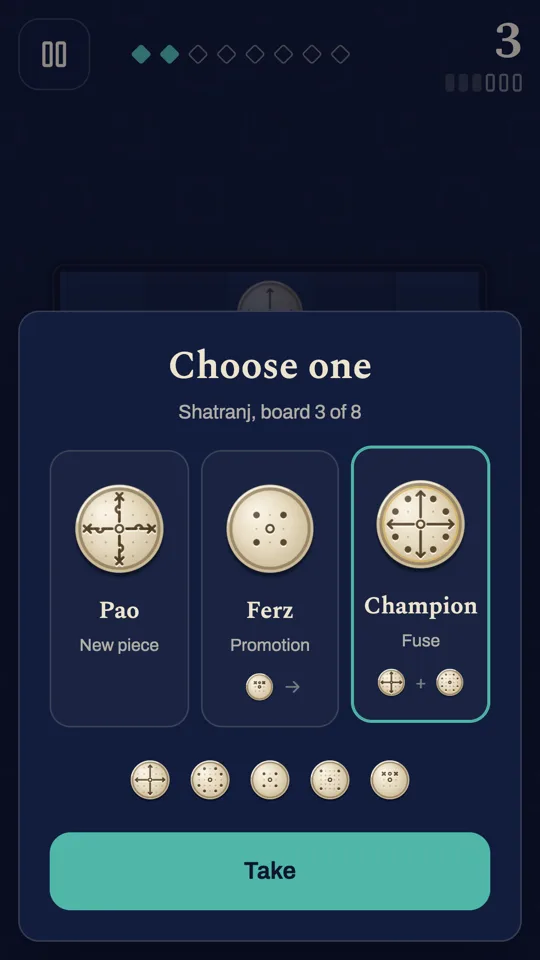
The Daily: one army for everyone
Every day has one fixed historical army against five fixed boards, the same for every player on Android and in the browser. The armies rotate through Baghdad 850, Samarkand 1400, Valencia 1475 and Ayutthaya 1600. The Daily's number comes from your own calendar date, so it changes at your midnight.
There is no draft and one scored try. Every board starts with the full army, and a lost board scores a cross and moves on to the next. Finish all five to keep your streak, then share a card that shows your moves against par and your survivors without giving any position away. There are never ads before, during or after the Daily.
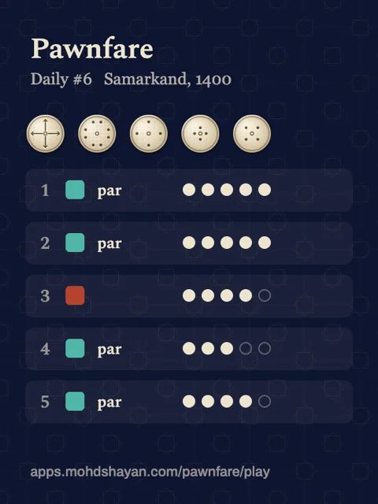
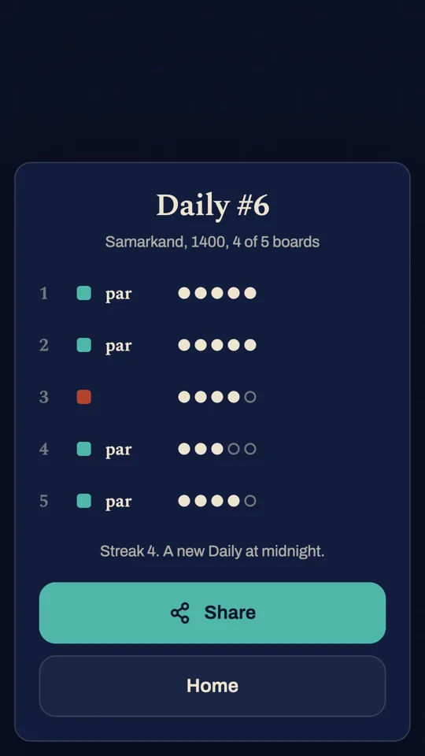
Tips for a longer run
Count before you move
Look at the moves left and the par ticks before the first move. On the early boards you have slack for a quiet preparing move; from board five you have one move to spare, so the plan has to be close to the shortest win from the start.
Touch the rival first
Before you move, touch each rival piece to see what it covers. The notch on your own targets says the same thing from the other side: a square with a notch is a square where the rival takes your piece on its next move, and that piece is gone for the rest of the run.
Know how the rival thinks
The rival tries every move, assumes your best capture in reply, and keeps the move that leaves it the most material. It will take a piece you leave unprotected, it will not leave its own pieces hanging when it can avoid it, and its king steps away from your threats. It never bluffs and never changes its mind: the same position always gets the same answer.
Box the king in
A king that can run is hard to catch with short steppers alone. Use leapers like the faras and the jamal, which attack from squares the king cannot reach, and sliders that cut off whole rows. Often the guards themselves fence their king in against the edge.
Mind your colours
The ferz and the fil move only diagonally, so each stays on the squares of one colour all game, and the fil reaches only a quarter of the board. Pair them with a straight mover, or fuse them into one that can reach the rest.
Give the cannon a screen
The pao slides like a rukh but captures only by jumping exactly one piece in between, yours or the rival's. A guard standing in front of the king is the screen your cannon needs.
Fuse or draft
A fused piece is strong and frees a place in an army of six, but losing it costs you both halves. When your army is small, a new strong piece is often the safer pick: a lone single-step piece cannot corner a king that runs, which is why a draft for an army under three pieces always offers a strong one.
Second chances in the app
In normal runs on Android you can replay a lost board once per run, take back a move once per board, and add a fourth choice to one draft, each by watching an ad you choose, or at once with Remove ads and archive. In the browser these bonuses are not offered, so every run is played straight.
In pictures
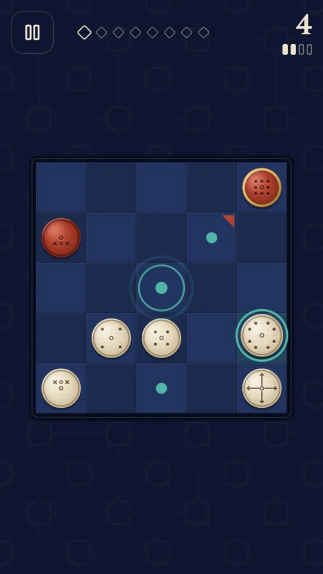
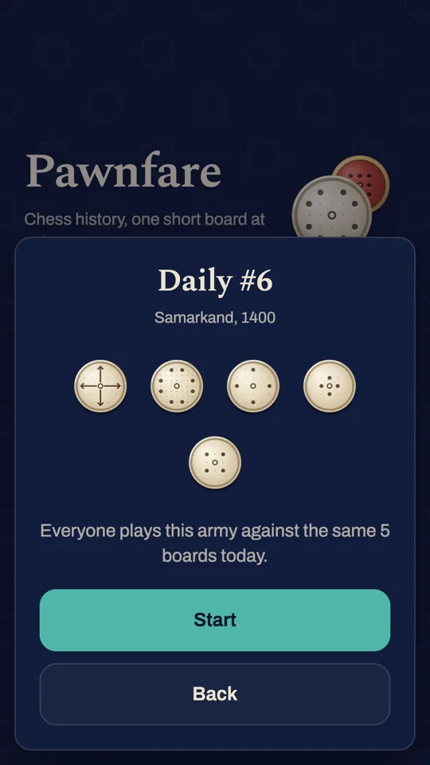
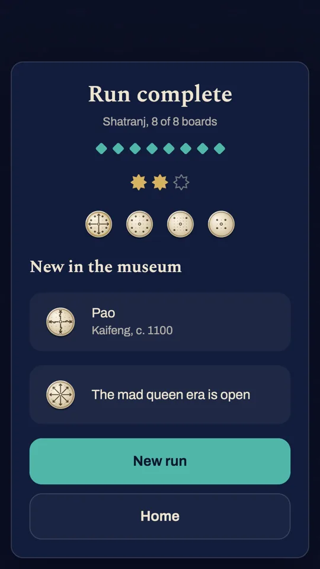
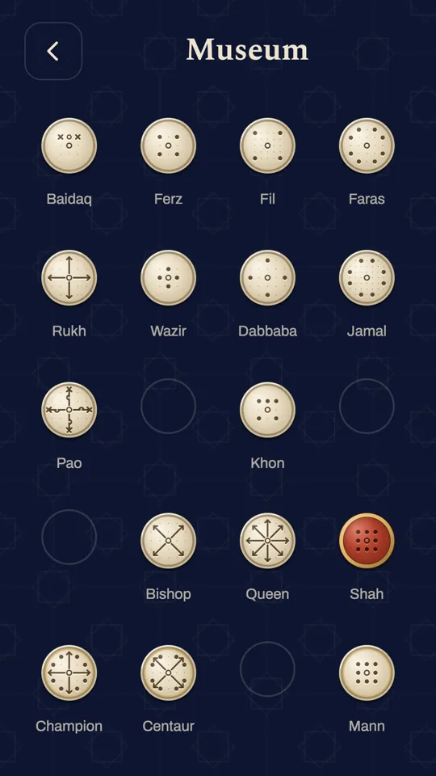
Free, with ads you can remove
Pawnfare is free on Google Play with ads, and an optional one-time Remove ads and archive purchase, bought through Google Play, takes them away. There are never ads during a board or around the Daily: a full screen ad can only come between boards of a run, after your third and sixth won board, or when a run that reached board four ends, and never in your first three boards. Rewarded ads are always your choice and name their reward first. Remove ads and archive removes the ads between boards for good, opens every past Daily and gives the rewarded bonuses without an ad.
In the browser, the same game plays with your progress kept in this browser, with ads beside the game on wide screens. How each version handles your data is in the privacy policy.